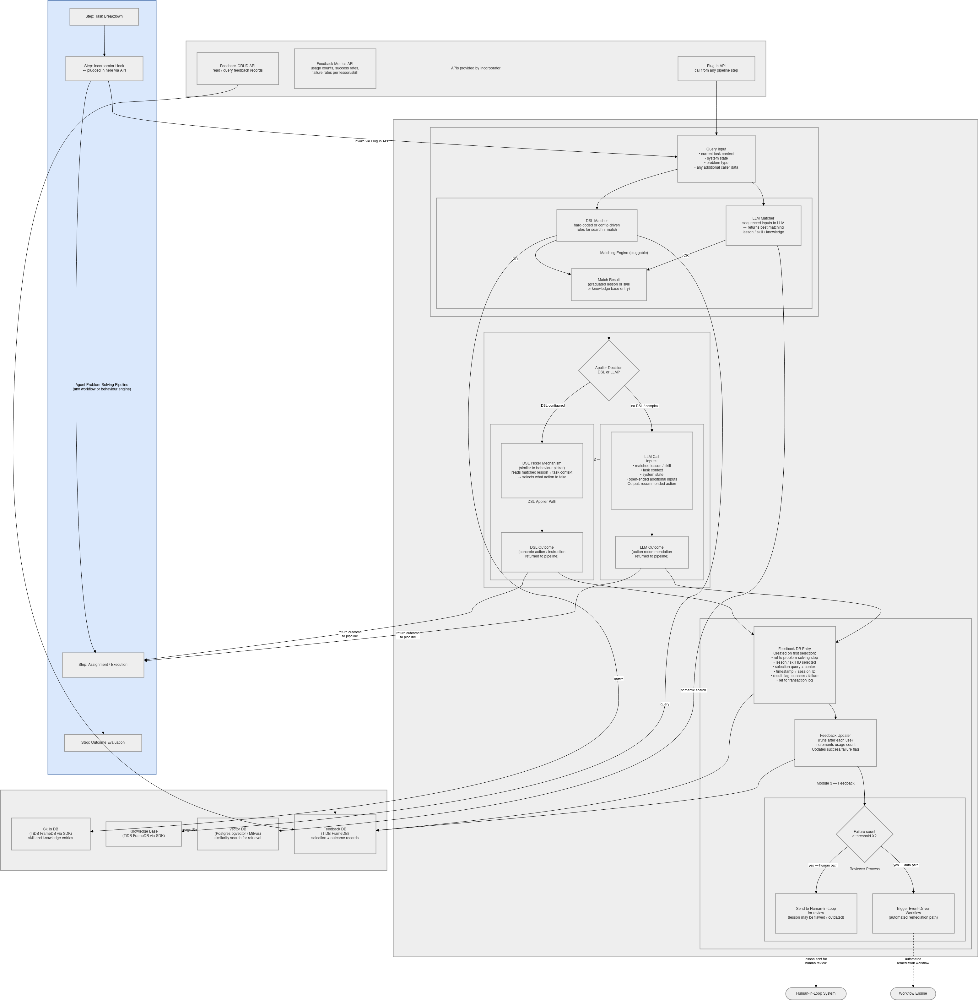

Incorporator & Feedback
The Incorporator (memorygrid_incorporator, MemoryGrid "Process 3") is how agents use what the Learner has learned. At a step of the agent's problem-solving pipeline it:
- matches the current problem against the promoted lessons in the Skills store and the Knowledge Base;
- applies the match, turning it into a concrete action for the pipeline to execute;
- records feedback for that selection;
and, once the pipeline reports the outcome:
- updates feedback and, if a lesson keeps failing, escalates it — back to human review and/or disabling it.


The Incorporator imports the Learner package and reuses its storage, LLM client and review queue. Both services must point at the same Skills/Knowledge Base storage (see Sharing storage with the Learner).
Running the Service
Requires Python ≥ 3.10 and the Learner/ folder next to Incorporator/. The Learner package is found automatically through the sibling folder, an editable install, or PYTHONPATH.
cd agent-memories/Incorporator
uv venv --python 3.11 .venv && source .venv/bin/activate
pip install -r requirements.txt # also installs ../Learner/requirements.txt
uvicorn memorygrid_incorporator.main:app --port 8001
Configuration (environment variables)
All the Learner variables apply too (MG_TIDB_DSN, MG_VECTOR_BACKEND, MG_VECTOR_DSN, MG_LESSONS_ROOT, ANTHROPIC_API_KEY, MG_LLM_MODEL, …). The Incorporator adds:
| Variable | Default | Description |
|---|---|---|
MG_FEEDBACK_TIDB_DSN |
sqlite+aiosqlite:///./memorygrid_feedback.db |
Feedback DB (separate from the lesson store) |
MG_MATCH_STRATEGY_MODE |
dsl_then_llm_fallback |
dsl_only, llm_only, dsl_then_llm_fallback, llm_then_dsl_fallback, best_of_both |
MG_DSL_MATCH_RULES_PATH |
./config/dsl_match_rules.json |
DSL matcher rules |
MG_FAILURE_THRESHOLD_X |
3 |
Failures of one lesson that trigger escalation |
MG_REVIEWER_PATH_MODE |
human_only |
human_only, auto_only or both |
MG_HIL_MODE |
learner_in_process |
Human path target: learner_in_process or http |
MG_HIL_BASE_URL |
http://localhost:8000 |
External HIL service (when MG_HIL_MODE=http) |
MG_AUTO_REMEDIATION_MODE |
disable_via_learner |
Auto path target: disable_via_learner or http |
MG_WORKFLOW_ENGINE_BASE_URL |
http://localhost:9000 |
External workflow engine (when MG_AUTO_REMEDIATION_MODE=http) |
Plug-in API
Invoke — POST /incorporator/invoke
Called by the host pipeline at its "Incorporator hook" step:
curl -X POST http://localhost:8001/incorporator/invoke -H "Content-Type: application/json" -d '{
"session_id": "s1",
"problem_solving_step_ref": "step-17",
"problem_type": "flaky_upload",
"current_task_context": {"operation": "upload report.pdf"},
"system_state": {"storage_status": "degraded"},
"additional_caller_data": {}
}'
QueryInput:
| Field | Required | Description |
|---|---|---|
session_id |
Yes | Pipeline session |
problem_solving_step_ref |
Yes | ID of the pipeline step (used again when reporting the outcome) |
problem_type |
Yes | Problem category; the key the DSL matcher's rules use |
current_task_context |
No | Task details (also used to fill instruction templates) |
system_state |
No | Environment state (given to the LLM applier) |
additional_caller_data |
No | Anything else (also used to fill instruction templates) |
Response — ApplierOutcome:
{
"id": "6f1c…",
"source": "dsl",
"action": "retry_with_backoff",
"instruction": "Retry upload report.pdf with backoff",
"recommended_action_payload": {"dsl_payload": {"action": "retry_with_backoff", "instruction_template": "Retry {operation} with backoff"}},
"match_result": {
"matched_entity_type": "skill",
"matched_entity_id": "2b9e…",
"matcher_used": "dsl",
"confidence": 1.0,
"raw_payload": { "...": "the promoted lesson" }
},
"created_at": "2026-10-22T10:00:00Z"
}
The pipeline executes action / instruction. If nothing matches, the response is 404.
Report outcome — POST /incorporator/outcome
Called after the pipeline evaluates the result:
curl -X POST http://localhost:8001/incorporator/outcome -H "Content-Type: application/json" \
-d '{"problem_solving_step_ref": "step-17", "session_id": "s1", "result_flag": "failure"}'
result_flag is success, failure or pending. The latest feedback entry for that step and session is updated and returned. The response is 404 if /incorporator/invoke was never called for that step and session.
Matching
The Matching Engine combines two matchers according to MG_MATCH_STRATEGY_MODE:
| Mode | Behaviour |
|---|---|
dsl_only |
DSL matcher only |
llm_only |
LLM matcher only |
dsl_then_llm_fallback (default) |
DSL first; LLM if DSL finds nothing |
llm_then_dsl_fallback |
LLM first; DSL if LLM finds nothing |
best_of_both |
Run both, keep the higher-confidence match |
DSL matcher (deterministic, no LLM)
Rules map a problem_type to a bin and a lookup query. They are loaded from MG_DSL_MATCH_RULES_PATH, and no rules apply if the file is missing.
{
"rules": [
{"problem_type": "flaky_upload", "target_bin": "skills_base", "query": "retry uploads", "min_score": 0.0},
{"problem_type": "pricing_question", "target_bin": "knowledge_base", "query": "pricing tiers", "min_score": 0.3}
]
}
For the rule of the query's problem_type, the matcher searches that bin with query (or the problem type when no query is set) and takes the top hit. Search combines text match on title/body (score 1.0) with vector similarity. A hit scoring below min_score is ignored.
LLM matcher
- Builds a text query from
problem_type,current_task_contextandadditional_caller_data. - Gets the 10 most similar promoted lessons from the vector store (both bins).
- Asks the LLM to choose one (
{"lesson_id": ..., "confidence": ...}). If the reply can't be parsed, or the LLM returns no choice, the top vector hit is used.
Applying
The Applier chooses between two paths for the matched lesson:
| Path | When | Result |
|---|---|---|
| DSL picker | The lesson's dsl_payload has an action |
source: "dsl". action is taken from dsl_payload.action. instruction is dsl_payload.instruction_template formatted with current_task_context + additional_caller_data; the raw template is used if a placeholder is missing |
| LLM applier | Otherwise | source: "llm". The LLM gets the lesson, task context, system state and extra data, and returns {"action", "instruction"}. If the reply can't be parsed, action is apply_recommended_lesson and instruction is the lesson title |
To make a lesson deterministic, give it a dsl_payload when you inject it into the Learner:
"dsl_payload": {"action": "retry_with_backoff", "instruction_template": "Retry {operation} with backoff"}
Feedback and Escalation
Feedback entries
Each successful invoke creates a FeedbackDBEntry in the Feedback DB:
| Field | Description |
|---|---|
id |
Entry ID |
problem_solving_step_ref, session_id |
Pipeline step and session |
lesson_skill_id, matched_entity_type |
The matched lesson |
selection_query, selection_context |
The query and task context |
result_flag |
pending → success / failure |
usage_count |
1 at selection, +1 per reported outcome |
transaction_log_ref |
ID of the ApplierOutcome |
timestamp, updated_at |
Threshold escalation
When a reported outcome is a failure, the Threshold Monitor counts that lesson's failed feedback entries. When the count reaches MG_FAILURE_THRESHOLD_X, the Reviewer Process escalates according to MG_REVIEWER_PATH_MODE:
| Path | learner_in_process / disable_via_learner (default) |
http |
|---|---|---|
Human path (human_only, both) |
The original lesson is set back to pending_review, logged with runtime_failure_flagged, and re-queued in the Learner's review queue. A human then approves, edits or rejects it with the Learner review API |
POST <MG_HIL_BASE_URL>/hil/flagged-lessons with {"lesson_skill_id", "feedback_entry_id", "reason"} |
Auto path (auto_only, both) |
The lesson is disabled immediately: deleted from the Skills store and the Knowledge Base (and the vector index), so it can no longer match | POST <MG_WORKFLOW_ENGINE_BASE_URL>/events with {"event_type": "lesson_remediation", "payload": {"lesson_skill_id", "failure_count"}} |
The http targets are external services you provide. The Learner does not implement /hil/flagged-lessons. Escalation runs again on every further failure once the threshold has been reached.
Feedback APIs
| Method & Path | Description |
|---|---|
GET /feedback/?lesson_skill_id=&session_id=&result_flag= |
Query feedback entries (all filters optional) |
GET /feedback/{entry_id} |
One entry (404 if unknown) |
GET /feedback/metrics/usage?lesson_skill_id= |
Usage and success/failure/pending counts, overall and per lesson |
GET /feedback/metrics/success-rate?lesson_skill_id= |
Success rate (success / decided), overall and per lesson |
GET /feedback/metrics/failure-rate?lesson_skill_id= |
Failure rate, overall and per lesson |
GET /health |
{"status": "ok"} |
// GET /feedback/metrics/usage
{
"by_lesson": {"2b9e…": {"usage_count": 6, "success": 2, "failure": 1, "pending": 0,
"success_rate": 0.667, "failure_rate": 0.333}},
"overall": {"usage_count": 6, "success": 2, "failure": 1, "pending": 0,
"success_rate": 0.667, "failure_rate": 0.333}
}
Host Pipeline Integration
The package includes a reference client for host pipelines, IncorporatorHookClient:
from memorygrid_incorporator.pipeline.incorporator_hook import IncorporatorHookClient
hook = IncorporatorHookClient("http://localhost:8001")
async def run_step(session_id, step_id, task):
outcome = await hook.invoke(
session_id=session_id,
problem_solving_step_ref=step_id,
current_task_context={"operation": task.name},
system_state={"storage_status": "degraded"},
problem_type=task.problem_type,
)
succeeded = await execute(outcome.action, outcome.instruction) # your executor
await hook.report_outcome(step_id, session_id, succeeded=succeeded)
invoke raises httpx.HTTPStatusError on a 404 (no match). Fall back to the agent's normal behaviour in that case.
Sharing Storage with the Learner
The Incorporator builds its own copies of the Learner's storage objects from the same settings. For it to see the lessons the Learner promotes, both services must share:
- the object store — the same
MG_TIDB_DSN(TiDB/MySQL, or the same SQLite file on one machine); - the vector store —
MG_VECTOR_BACKEND=pgvectorormilvuswith the sameMG_VECTOR_DSN. The defaultmemorybackend is private to each process, so the LLM matcher wouldn't see the other service's lessons; - the lessons folder — the same
MG_LESSONS_ROOT.
With the default learner_in_process human path, a flagged lesson is re-queued in the Incorporator's in-process copy of the review queue. The flagged lesson's pending_review status is still stored in the shared object store, so it appears in the Learner's GET /lessons/review/queue.
Programmatic Use
from memorygrid_incorporator.api.deps import build_dependencies
from memorygrid_incorporator.config import Settings
from memorygrid_incorporator.incorporator.models import QueryInput
from memorygrid_incorporator.feedback.models import ResultFlag
deps = build_dependencies(Settings())
query = QueryInput(session_id="s1", problem_solving_step_ref="step-1", problem_type="flaky_upload",
current_task_context={"operation": "upload"})
match = await deps.matching_engine.match(query)
outcome = await deps.applier_service.apply(match, query)
await deps.feedback_recorder.record_selection(query, match, outcome)
entry = await deps.feedback_updater.update("step-1", "s1", ResultFlag.FAILURE)
await deps.threshold_monitor.check_and_escalate(entry)
deps.learner_deps is the Learner's full dependency container (stores, review service, …).